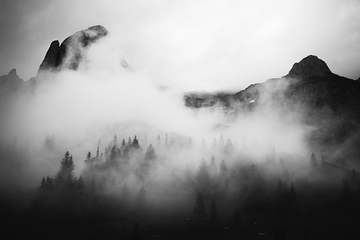

Research methods
Why gas chemistry matters
Changes in gas composition can add context to other observations; no single measurement tells the whole story.
Traverse City, Michigan
A fictional volcano research institute sharing careful observations, field methods, and plain-language science. The values below are simulated educational data.
| Station | Location | Ground temperature | Deformation | Note |
|---|---|---|---|---|
| V-091 | Lake station | 42 °C | 0.20 mm/day | Within sample range |
| V-092 | Lower springs | 44 °C | 0.27 mm/day | Within sample range |
| V-093 | South crater | 46 °C | 0.34 mm/day | Within sample range |
| V-094 | North fumarole | 48 °C | 0.41 mm/day | Within sample range |
| V-095 | East ridge | 50 °C | 0.48 mm/day | Within sample range |
Changes in gas composition can add context to other observations; no single measurement tells the whole story.
Repeat surveys help researchers separate a long-term pattern from seasonal movement and instrument noise.

Lake water chemistry and temperature can preserve clues about interactions below the surface.